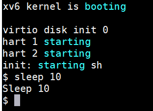
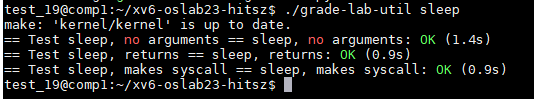
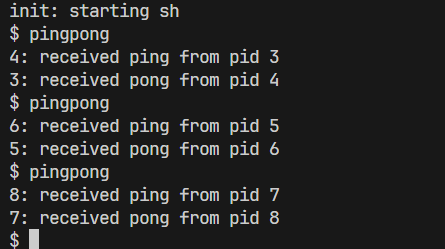
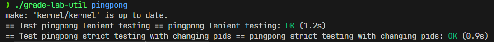
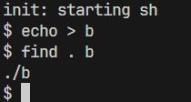
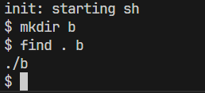
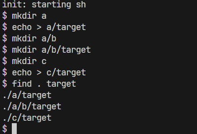
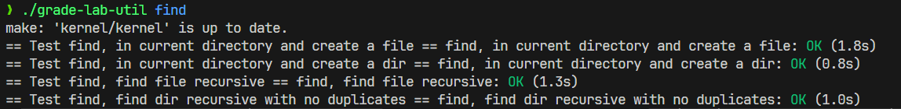
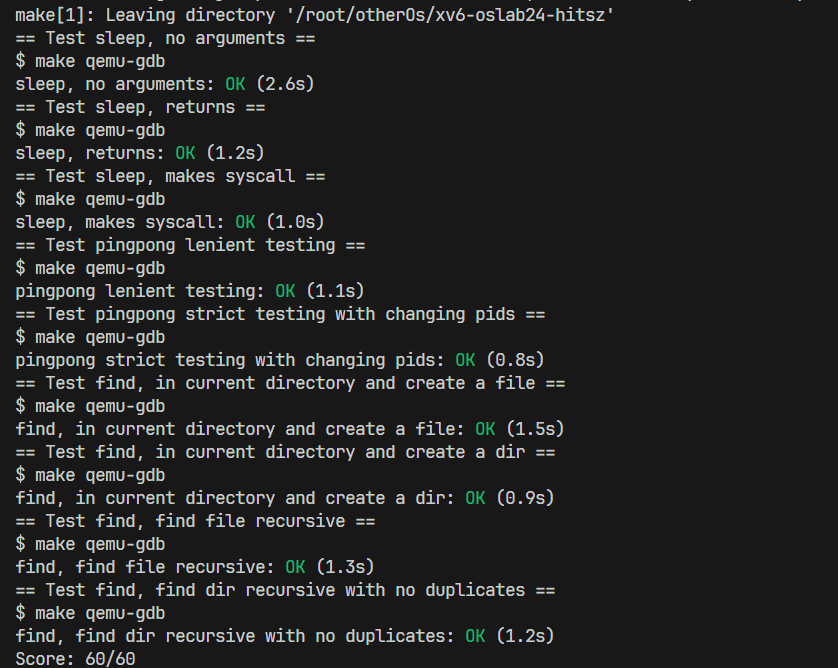
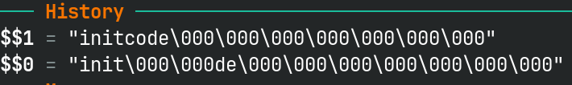

实验概述¶
学术诚信与独立实践
- 独立红线 ：请独立完成实验，主动避免阅读、使用他人或互联网上现成的实验代码。
- 讨论边界 ：遇到困难时，请先自己分析、实现、调试；可以讨论思路，但不要交换代码。
- AI 准则 ：可适度使用 AI 辅助理解概念、梳理思路、定位问题；不要直接提交本人未充分理解的 AI 生成内容。
- 重在收获 ：课程看重的不只是结果，更看重你在实践中形成的理解与能力。
实验说明
本页重点说明“这一节到底要做什么、做到什么程度算完成”。 能力较强的同学，看完本页后就可以直接开始实验。 如果你希望了解得更细一些，可以继续阅读 实验原理 和 实验步骤 ，其中给出了更详细的背景说明、实现提示和操作步骤。
1. 实验目的¶
- 熟悉 XV6 的实验环境、代码组织和基本开发流程。
- 掌握在 XV6 中编写、编译、运行和测试用户程序的基本方法。
- 通过
sleep、pingpong和find三个程序，练习系统调用、进程创建、进程间通信和目录遍历等基础内容。 - 借助命令行 GDB 跟踪 XV6 启动流程，理解第一个用户进程的产生，以及从
initcode到init的切换过程。 - 为后续实验建立对 XV6 代码结构、调试方法和系统运行过程的整体认识。
2. 实验学时¶
本实验为 4 学时。
3. 实验内容及要求¶
本次实验包含 4 部分：3 个 Unix 实用程序 + 1 个 XV6 启动流程调试实验。与原始 XV6 实验相比，本课程实验内容做了定制化调整。
先分清 3 种命令行
- Linux 命令行 ：在你的远程实验环境或本地 Linux 终端中运行，例如
git、make qemu、make grade、cat .gdb_history。 - XV6 命令行 ：运行
make qemu进入 XV6 后，在出现$提示符的地方运行，例如sleep 10、pingpong、find . b。- 从 XV6 回到 Linux ：先按
Ctrl+a，完全松开后再按x，退出 QEMU，即可回到 Linux 命令行。
- 从 XV6 回到 Linux ：先按
- GDB 命令行 ：运行
make gdb进入 GDB 后使用，例如b main、c、p cpus[$tp]->proc->name、source commands.gdb。- 从 GDB 回到 Linux ：输入
q退出 GDB，即可回到 Linux 命令行。
- 从 GDB 回到 Linux ：输入
下面给出每个任务的目标、运行效果和测试结果示例。你可以把它们理解为“做完之后大致应当长什么样”。
3.1 sleep¶
你需要在 user/sleep.c 中实现一个简化版 sleep 程序。它读取命令行参数中的时间长度，让当前进程休眠一段时间后返回。
运行效果示例如下（以下命令在 XV6 命令行 中运行）：

输入命令后，程序会先暂停一段时间（10 个 ticks，一个 tick 大约 100ms），随后输出 Sleep 10，再回到 shell。
测试通过示例如下（以下命令在 Linux 命令行 中运行）：

3.2 pingpong¶
你需要在 user/pingpong.c 中实现两个进程之间基于管道的双向通信。
任务要求如下：
- 父进程向管道中写入数据，子进程从管道将其读出并打印
<pid>: received ping from pid <father pid>，其中<pid>是子进程的进程ID，<father pid>是父进程的进程ID。 - 子进程从父进程收到数据后，通过写入另一个管道向父进程传输数据，然后由父进程从该管道读取并打印
<pid>: received pong from pid <child pid>，其中<pid>是父进程的进程ID,<child pid>是子进程的进程ID。
运行效果示例如下（以下命令在 XV6 命令行 中运行）：

测试通过示例如下（以下命令在 Linux 命令行 中运行）：

3.3 find¶
你需要在 user/find.c 中实现一个简化版 find 程序，在目录树中查找名称与目标字符串匹配的文件或目录，并输出相对路径。
命令格式为：
find <path> <name>
你至少需要完成以下几种情况：
- 能在当前目录找到同名文件
- 能在当前目录找到同名目录
- 能递归进入子目录继续查找
下面 3 个查找示例均在 XV6 命令行 中运行。
示例 1：查找文件
在根目录新建 文件b （echo > b这个命令的效果就是清空（或创建并清空）文件b）时，当cwd(Current Working Directory)为根目录时，在根目录下查询b的输出效果应该如下：

示例 2：查找目录
在根目录新建 目录b （mkdir b 这个命令用于创建一个名为 b 的新目录（文件夹））时，当cwd为根目录时，在根目录下查询b的输出效果应该如下：

示例 3：递归查找
当要查询的目录或文件target在根目录的某个子文件夹中时，你也应该将结果显示出来

单项测试示例如下（以下命令在 Linux 命令行 中执行）：

如果 sleep、pingpong 和 find 都完成了，可以在 Linux 命令行 中进一步执行 make grade 进行总测试：

3.4 XV6 启动流程实验¶
你需要学会使用命令行 GDB 跟踪 XV6 的启动流程，并在 GDB 命令行 中于两处关键位置打印当前进程名：
p cpus[$tp]->proc->name
其中，$tp 是当前 CPU 编号对应的寄存器值。你最终需要分别打印出：
- 初始进程
initcode exec("/init")之后的init
最终效果示例如下：

本任务最后需要提交一个 commands.gdb 文件。要求是在 GDB 中执行 source commands.gdb 后，能够复现你的关键调试过程。
这个脚本不一定要写得很长；如果思路清楚，最短仅需 6 行，同学们可以尝试自己精简一下。
如何导出 commands.gdb
最直接的做法是：
- 在 GDB 中完成调试后，用
q正常退出。 - 回到终端，打开当前目录下的
.gdb_history，从中整理出你用过的关键命令。 - 把这些命令保存为
commands.gdb。 - 下次进入 GDB 后执行
source commands.gdb，检查能否复现。
例如，你可以先执行：
cat .gdb_history
再把需要的命令整理到 commands.gdb 中。注意：建议用 q 退出 GDB，而不是直接关闭终端，否则历史命令可能没有写回文件。
更完整的说明可参考 GDB 调试指南 。
4. 建议完成顺序¶
建议按下面的顺序进行：
- 先把环境跑通，确认
make qemu成功。 - 完成
sleep，熟悉“新增用户程序 + 修改 Makefile”的基本流程。 - 完成
pingpong，重点理解pipe、fork、read、write。 - 完成
find，重点理解目录项遍历和递归。 - 最后做启动流程调试实验，重点理解 XV6 从内核启动到进入第一个用户程序的过程。